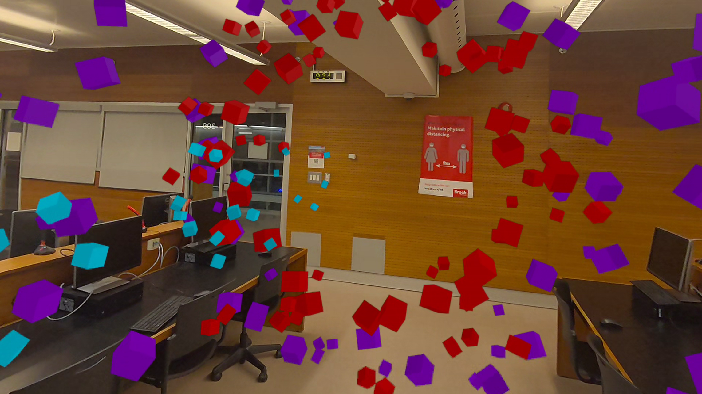

I am an Associate Professor of Digital Humanities at Brock University, where I am also currently serving as Chair of the Department of Digital Humanities. My research interests include spatial humanities, manuscript studies, modernist digital humanities, and (most recently) developing augmented reality data visualization tools from a humanities perspective. Notable projects and publications can be found in the other sections of this site.
Excellence in Teaching for Early Career Faculty, Brock University. (2019)

Wordscape is an augmented reality data visualization tool that lets users feel data by placing it in physical relationship to their bodies. It reimagines modernist avant-garde techniques as design principles for spatial computing environments. This project is currently in active development.
While text processing is often associated with the digital humanities, it is still seen as worlds apart from literary modernism and its aesthetic preoccupations. This book upsets that narrative...